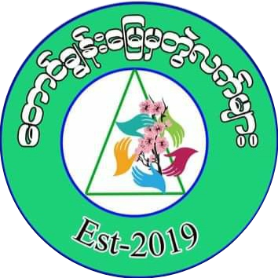

တောင်ချွန်းမြေမှတွဲလက်များ -အဓိပ္ပာယ်ဖွင့်ဆိုချက်
-
လက်
ခွန်အားမျှထိန်းသိမ်းကူညီခြင်း။
-
အရောင်စုံ
လူမျိုးဘာသာမရွေး ကျာ/မ မခွဲတန်းတူညီမှု။
-
အစိမ်း
သဘာဝအရင်းအမြစ်ထိန်းသိမ်းဖို့။
-
အဖြူ
စေတနာ့ဝန်ထမ်းများအားကိုယ်စားပြု ဖြူစင်မှု။
-
သုံးမြှောင့်
ဂေဟာစနစ်ကို ထိန်းသိမ်းခြင်း ၊ ညီညွှတ်ခြင်း။
-
Est – 2019
အဖြူရောင်အဖြစ်စတင် စုစည်းခြင်း။
-
ချယ်ရီ
လွိုင်လင်ကိုယ်စားပြုကာတန်ဖိုးထားတဲ့အရာများအား ကိုယ်စားပြုခြင်း ။
အဖွဲ့၏မျှော်မှန်းချက်
“ မတူကွဲပြားမှုမရှိ ရေရှည်တည်တံ့ငြိမ်းချမ်းသောလူမှုဘဝဖွံ့ဖြိုးရေးဆီသို့ ” ။
အဖွဲ့၏ရည်မှန်းချက်
(က) ဒေသအတွင်း၌ အမျိုးသမီးခေါင်းဆောင်များပေါ်ထွက်လာပြီး ဖွံ့ဖြိုးရေးလုပ်ငန်းများတွင် ဦးဆောင်ပါဝင် လာစေရန်။
( ခ) ဒေသအတွင်း လူငယ်ခေါင်းဆောင်များ ပေါ်ထွက်လာပြီး ဖွံ့ဖြိုးရေးလုပ်ငန်းများ ချိတ်ဆက်ဆောင်ရွက် လာစေရန်။
( ဂ) ဒေသအတွင်းရှိ ဖွံ့ဖြိုးရေးရရှိလာပြီး ၎င်းတို့ကိုယ်တိုင် ဖွံ့ဖြိုးရေးလုပ်ငန်းများကို ဦးဆောင်လုပ်ကိုင်လာ တတ်စေရန်။
(ဃ) ဒေသ၏လူမှုရေး ၊ ပညာရေး ၊ ကျန်းမာရေး များဘက်စုံဖွံ့ဖြိုးတိုးတက်လာစေရန်။
( င) ဒေသအတွင်းရှိ ကျေးရွာများတွင် ကလေးသူငယ်ကာကွယ်ရေး လုပ်ငန်းစဉ်များနှင့် ကလေးသူငယ်အခွင့် အရေးများ သိရှိနားလည်စေရန်။
( စ) ဒေသအတွင်းရှိ လူ့အခွင့်အရေးများကို သိရှိနားလည်ပြီး လူ့ဂုဏ်သိက္ခာရှိစွာနေထိုင်လာစေရန်။
(ဆ) ကျား/မ တန်းတူအခွင့်အရေး ရရှိစေရန်။
( ဇ) ငြိမ်းချမ်းရေးကို မြတ်နိုးသော လူ့အသိုင်းအဝိုင်း တည်ဆောက်ရန်။
( ဈ) သဘာဝပတ်ဝန်းကျင်ရှိ အရင်းအမြစ်များ၏ တန်ဖိုးကိုသိရှိနားလည်ပြီးထိန်းသိမ်းဆောင်ရွက်လာတတ်စေရန်။
အဖွဲ့၏သမိုင်းအကျဉ်း
တောင်ချွန်းမြေမှတွဲလက်များ အဖွဲ့ကို ၂၀၁၇ ခုနှစ်တွင် အဖွဲ့ဝင်ဦးရေ (၃၀)ခန့် ဖြင့် စတင်ဖွဲ့စည်းတည် ထောင်ခဲ့သည်။ အဖွဲ့စတင်ဖွဲ့စည်းချိန်တွင် လွိုင်လင်မြို့နယ်တွင်နေထိုင်သော ကျောင်းသူ/ကျောင်းသားများအား စနေနေ့လူငယ်စကားဝိုင်း လုပ်ဆောင်ခြင်း၊ ဌာနဆိုင်ရာများနှင့်ချိတ်
ဆက်ပြီး သစ်ပင်များစိုက်ပျိုးခြင်း သဘာဝ ပတ်ဝန်းကျင်ထိန်းသိမ်းရေးနှင့် ပတ်သက်ပြီး အမှိုက်များကောက်ခြင်း လှုပ်ရှားမှု၊ အမြင်ဖွင့်ခြင်း၊ သာရေး/နာရေး လုပ်ငန်းများတွင် ပါဝင်ကူညီခြင်းတို့ကိုစတင်လုပ်ဆောင်ခဲ့ပါသည်။ ၂၀၁၈ ခုနှစ်မှစတင်ကာအဖွဲ့အစည်းအနေဖြင့် ကလေးသူငယ်ကာကွယ်
စောင့်ရှောက်ရေးဆိုင်ရာ စစ်တမ်းများကောက်ယူခြင်းနှင့် အမြင်ဖွင့် သင်တန်းပံ့ပိုးခြင်း၊ သဘာဝပတ်ဝန်းကျင်ဆိုင်ရာ အမြင်ဖွင့်သင်တန်းပံ့ပိုးခြင်း၊ကျား/မ ရေးရာအမြင်ဖွင့်သင်တန်းပံ့ပိုးခြင်း ၊မဲပညာပေး ခြင်းဆိုင်ရာ အမြင်ဖွင့်ပေးခြင်း၊ ဝါးလက်မှုသင်တန်းပံ့ပိုးပေးခြင်း
၊ကိုဗစ်-၁၉ ကာကွယ်/တားဆီးတုံ့ပြန်ခြင်း/လျှော့ ချခြင်းလုပ်ငန်းများတွင် Quarantine Center များတွင် Quarantine ဝင်ရောက်နေသူများအား အစားအသောက်နှင့် တစ်ကိုယ်ရေသန့်ရှင်းရေးဆိုင်ရာလုပ်ငန်းများတွင် ပါဝင်ကူညီဆောင်ရွက်ခြင်း ၊ ယခု COVID-19 တတိယ လိုင်း ကာလတွင်လည်းအဖွဲ့ရှိ
လူငယ်များမှအသွားအလာကန့်သတ်ခံထားရသော နေအိမ်များ၏လိုအပ်သည့် စားနပ်ရိက္ခာ ၊ ဆေးဝါးများကို ကူညီကာဝယ်ပေးခြင်း ဖြင့် လည်းကောင်း ထိုနေအိမ်များထံ သို့အလှူရှင် များမှ လှူဒါန်းသော အစားအစာများကို တဆင့်ပြန်လည်ပေးပို့လျှက်ရှိပါသည်။ ထို့အပြင်OXYGEN လိုအပ်လျက်ရှိသော
လူနာအိမ်များသို့ လိုက်လံ ပို့ဆောင်ပေးလျက်ရှိခြင်း ၊ မြို့ဝင် / မြို့ထွက်စစ်ဆေးရေးဂိတ်များတွင် စေတနာ့ဝန်ထမ်း များအဖြစ် ပါဝင်ကူညီဆောင်ရွက်ခဲ့သည်။ လက်တွဲအကောင်အထည်ဖော်ခဲ့သော မိတ်ဖက်အဖွဲ့အစည်းများမှာ စိမ်းလန်းအမိမြေ ၊ ဖန်တီးအိမ် ၊ PACE၊ MYMFREL ၊ SHOD
၊ METTA Development Foundation ၊ UNICEF ALLIANCE MYANMAR၊ ဒို့ ချစ်တဲ့ကမ္ဘာမြေ။ နှလုံးလှအင်းမောင်မယ် တို့နှင့် ပူးပေါင်းပြီး ဒေသဖွံ့ဖြိုးရေးလုပ်ငန်း များကို အကောင်အထည်ဖော် လုပ်ဆောင်ခဲ့ပါသည်။
လုပ်ဆောင်ခဲ့သောလုပ်ငန်းများ
(၁) အဖွဲ့စတင်ဖွဲ့စည်းချိန်တွင် လူငယ်များအတွက် စနေ နေ့ စကားဝိုင်းကိုဦးဆောင်ပြုလုပ်ပေးခြင်း။
(၂) မိုးရာသီများတွင်ဌာနဆိုင်ရာအရပ်ဖက်အဖွဲ့အစည်းများနှင့် ပူးပေါင်းကာ ရေဝေရေလွှဲဒေသအတွက်သစ်ပင်များစိုက်ပျိုးခြင်းလုပ်ငန်းများဦးဆောင် ဆောင်ရွက်ခြင်း။
(၃) ၂၀၁၈ ခုနှစ်မှစတင်ကာ အခြားသော NGO/ INGO များနှင့်ချိတ်ဆက်ကာ လိုအပ်သောလုပ်ငန်းများ လုပ်ဆောင်ချက်များတွင်ပါဝင်လုပ်ဆောင်ခဲ့ခြင်း။
(၄) Child Protection Assessment Training သင်တန်းတက်ရောက်ပြီး လွိုင်လင်မြို့နယ်ရှိ မူကြိုနှင့် မူလတန်းဆရာ/ဆရာမ များအား Child Protection နှင့်ပက်သတ်သော အသိပညာပေး ဟောပြောပွဲ များကိုပြုလုပ်ခဲ့သည်။
(၅) ဝါးလက်မှုနှင့် စိုက်ပျိုးရေးဆိုင်ရာ သင်တန်းများပြုလုပ်ခြင်း ။
(၆) အဖွဲ့အစည်းဖွံ့ဖြိုးမှုအတွက် လုပ်ဆောင်ခြင်းများ (OD) “အတူတူဆိုရင်”ခေါင်းစဉ်ဖြင့် Valentine’s Day တွင် နည်းပညာတက္ကသိုလ် အနုပညာအသင်း ကျောင်းသားသမဂ္ဂအရပ်ဘက််အဖွဲ့အစည်းများ၊ မြန်မာနိုင်ငံခရစ်ယာန် မျက်မမြင်အသင်းမှ ညီအစ်ကိုမောင်နှမ များနှင့်ပူးပေါင်းကာ
လိင်နှင့်မျိုးဆက်ပွားဆိုင်ရာ ကျန်းမာရေးနှင့်အခွင့်ရေးများအကြောင်းပညာပေးအစီစဉ်ပြုလုပ်ခဲ့သည်။
(၇) ကလေးစာပေပွဲတော် များပြုလုပ်ပေးခြင်း။
(၈) သက်ကြီးရွယ်အို များအားပြုစုစောင့်ရှောက် ခြင်း ။
(၉) စစ်ဘေးနှင့် သဘာဝဘေးအန္တရယ် များအတွက် ကူညီဆောင်ရွက်ခြင်း (ရေဘေး နှင့်ကိုဗစ်ဘေး) သဘာဝပတ်ဝန်းကျင်ဆိုင်ရာများ ကျားမရေးရာများတွင် သင်တန်းများပေးခြင်း။
မိတ်ဖက်အဖွဲ့ အစည်းများနှင့် ပြုလုပ်ခဲ့သော လုပ်ငန်းစဉ်များ
(၁) Sympathy Handsအဖွဲ့ နှင့်အတူ Child Protection Assessment လုပ်ငန်းများ။
(၂) MYNFREL အဖွဲ့ နှင့်အတူ CIVIC and Voter Education “ Let’s go Vote and let’s Check List Campaign”လုပ်ငန်းများ။
(၃) ဖန်တီးအိမ် အဖွဲ့ နှင့်အတူ CIVIC and Voter Education Training လုပ်ငန်းများ။
(၄) PACE အဖွဲ့ နှင့်အတူ Election Observation လုပ်ငန်းတွင်အဖွဲ့ဝင်များမှပါဝင်ဆောင်ရွက်ခြင်း။
(၅) စိမ်းလန်းအမိမြေအဖွဲ့နှင့်အတူ ကျေးသီး၊ ဟိုပုံး လွိုင်လင်မြို့နယ်တို့တွင် ပတ်ဝန်းကျင် ရေးရာသင်တန်းပေးခြင်း ။
(၆) မေတ္တာဖွံ့ဖြိုးရေးဖောင်ဒေးရှင်းနှင့်အတူ COVID-19 Response အတွက် ကျေးရွာစေတနာ့ဝန်ထမ်း များအား သင်တန်းပေးခြင်း မြို့အဝင်စစ်ဆေးဂိတ်များတွင်ကူညီဆောင်ရွက်ပေးခြင်း Quarantine Center များတွင်နေထိုင်သူများအား HYGIENE Kit များဝေပေးခြင်း စားနပ်ရိက္ခာများ
လှူဒါန်းရာတွင်ကူညီဆောင်ရွက်ခြင်း။
(၇) UNICEF အဖွဲ့နှင့်အတူ Quarantine ကလေးသူငယ်များအတွက် CPI များ ပေးဝေခြင်း၊ Child Protection and GBV သင်တန်းများပြုလုပ်ခြင်းနှင့် ကလေးသူငယ်များအတွက်ကစားကွင်းပြုလုပ်ခြင်း။
(၈) ဒို့ချစ်တဲ့ကမ္ဘာ ၊ နှလုံးလှအင်းမောင်မယ် အဖွဲ့တို့နှင့်အတူ Plastic Campaign၊Planting Trees ၊ International Youth Day Event ၊ Youth Empowerment Training လုပ်ငန်းများ။
(၁၀) ALLIANCE Myanmar အဖွဲ့နှင့်အတူ SRHR (Project ) အား ဦးဆောင်ပြုလုပ်ခြင်း။ စသည့်လုပ်ငန်းစဉ်များကိုလုပ်ဆောင်ခဲ့ပါသည်။
{% endblock content %}